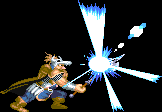

|
|
|
DWARF |
 |
| |
여기서의 데미지는 상대적인 데미지를 뜻합니다.
이곳에 적은 콤보가 전부는 아니므로 자신만의 콤보를 개발하는 것도 좋습니다.
드워프의 일반 A공격은 2타 4히트째에 적이 거의 무조건 쓰러지는 데다가 무기의 단발 데미지 또한
파이터의 3/4수준이기 때문에 후반으로 갈 수록 A공격만으로 적을 공격하면 한없이 약합니다.
따라서 슬래쉬와 대공기가 조합된 단순하고 직선적인 콤보가 많지만 전부 다단 히트 기술들이기 때문에
적에게 강제로 히트수를 넣을 수 있으며 콤보의 연결 또한 타 클래스에 비해 매끄럽게 연결 됩니다.
강공격:→A 슬래쉬:↓↘→A 대공기:↓↑A |
| |
일반 공격을 할 경우 화면이 번쩍이면서 우측 그림과 같은 효과가 나올 때가 있습니다.
'크리티컬 데미지' 혹은 '맥시멈 데미지(줄여서 맥뎀)'가 나오는 상황인데
이경우 적이 바로 쓰러지니 콤보시도시 이점을 유의하시기 바랍니다. |
 |
|
| |
슬래쉬 → 대공기 (데미지 : 최대 12 / 성공률 : 높음)
가장 기본적인 형태의 콤보로 가드를 잘 하는 보스의 경우 정면에서 바로 슬래쉬를 쓰면 위험하니
단검류나 해머, 화살류를 이용해 가드를 푼 후 사용하거나 후면을 노리는게 좋습니다.
슬래쉬가 3히트한 후 대공기 5히트까지 다 들어가면 맞은 적은 공중으로 높이 뜨게 되는데 이것이 싫다면
슬래쉬 2히트 째에 대공기로 캔슬하면 됩니다.
사라만다의 경우 파이어 레지스트 링을 착용하고 D키나 라이트닝 볼트 반지 등을 이용해 띄운 후 사용하는게 좋습니다.
에저홀덴의 경우는 콤보를 성공시켜도 다운되지 않으므로 대공기 후 카운터에 주의해야 합니다.
가용 보스 : 다크 워리어, 텔아린, 오우거, 맨티코어, D.비스트, 구석에 몰아 넣은 플레임 사라만다, 에저홀덴
|
|
|
| |
슬래쉬 → 슬래쉬 → 슬래쉬 (데미지 : 최대 12 / 성공률 : 보통)
적을 빠르게 제압해야 할 경우 쓰는 콤보입니다. 마지막 슬래쉬는 최대 2히트만 먹힙니다.
단, 하피의 경우 두번째 슬래쉬 후에 쓰러지는 척하다가 공중으로 날아오르는 경우가 있으니
무작정 세번째 슬래쉬를 넣기 보다는 상황을 지켜보고 대처하는게 좋습니다.
가용 보스 : 하피, D.비스트. 나그파
|
|
|
| |
A(1히트) → 슬래쉬 → 슬래쉬 (데미지 : 최대 10 / 성공률 : 높음)
기초 콤보중 하나로 만티코어의 경우 A공격을 가드하면 바로 카운터가 날아오기 때문에 투척무기로 가드를 풀고 쓰는게
좋습니다. 맨 스콜피온은 두번째 슬래쉬가 먹히질 않으므로 'A(1히트) → 슬래쉬'의 형태로 쓰는 것이 좋습니다.
가용 보스 : 맨 스콜피온, 하피, 만티코어, 나그파
|
|
|
| |
대쉬공격(1히트) → 슬래쉬 → 슬래쉬 (데미지 : 최대 10 / 성공률 : 낮음(일반몹은 높음))
비홀더는 4히트를 넘기면 사방으로 데미지를 입히는 광선을 뿌리므로 첫번째 슬래쉬 까지만 넣는게 좋습니다.
보스보다는 일반 몬스터에게 주로 쓰며 성공률도 더 높습니다.
가용 보스 : 비홀더
|
|
|
| |
대쉬공격 → 대공기 (데미지 : 최대 8.5 / 성공률 : 높음)
슬래쉬를 쓰기에 애매한 거리이고 적들이 많을 때 쓸만한 콤보입니다.
가용 보스 : 다크 워리어, 하피, 텔아린, 오우거, 만티코어
|
|
|
| |
강공격 → 대공기 (데미지 : 최대 10.5 / 성공률 : 보통)
슬래쉬를 쓸 공간이 없을 경우 쓰는 콤보입니다. 텔아린의 경우 너무 가까이 붙으면 중단베기에 맞을 수 있습니다.
하피의 경우 강공격 3히트후 스턴상태가 되지 않으면 대공기를 맞다가 빠져나가 버리는 경우가 있습니다.
가용 보스 : 다크 워리어, 하피, 텔아린, 오우거, 만티코어
|
|
|
| |
해머 투척 → 슬래쉬 → 원래 위치로 이동 → 이하반복 (성공률은 보통이나 많은 연습 필요)
적당한 거리를 벌린후 해머를 던지고 난 직후 슬래쉬를 넣으면 슬래쉬 3히트 째에 해머가 맞으면서 쓰러지지 않고
스턴상태가 됩니다. 이것을 이용하여 해머횟수만큼 반복해서 콤보를 넣어주는 것입니다.
일반 몬스터가 섞여 나오지 않는 보스에게 쓰기 좋은데 다크 워리어의 경우 일정 HP이하로 내려가서 행동이 빨라지면
플레이어의 공격을 무시하고 광분하니 조심하는게 좋습니다.
가용 보스 : 다크워리어, 맨스콜피온, 하피, 텔아린, 오우거, 만티코어, D.비스트
|
|
|
| |
롤링어택 → 슬래쉬 → (슬래쉬 / 대공기) (데미지 : 최대 11.5 / 성공률 : 낮음)
타 클래스의 방향 전환 점프 찍기와 비슷한 용도로 롤링어택을 넣은 콤보로(일종의 역가드 개념)
롤링어택으로 적의 가드를 무산시키고 캔슬 후 후속 콤보를 넣습니다.
다만 캔슬의 타이밍을 잡기가 상당히 어려우므로 많은 연습을 필요로 합니다. 퍼포먼스용으로는 최고의 콤보.
가용 보스 : 만티코어, D.비스트
롤링 캔슬에 대한 부연 설명
몸체가 땅에 닿음과 동시에 커맨드를 정확히 넣으면 롤링어택이 캔슬이 되고 입력한 커맨드가 발동합니다.
입력 가능한 커맨드 : 백열베기, 강타, 구르기, 슬래쉬, 슬라이딩, 대공기, D키버튼을 이용한 투척 또는 헤딩
|
|
|
| |
A+B → 슬래쉬 → (슬래쉬 / 대공기) (데미지 : 최대 12 / 성공률 : 보통)
A+B를 맞은 반동으로 튀어 오르는 적에게 콤보를 넣는 형식입니다.
일반 몬스터에게는 슬래쉬를 계속 넣어주면 됩니다. 적과의 거리에 따라 슬래쉬와 대공기를 적절히 섞어줍시다.
가용 보스 : 하피, 나그파
|
|
|
| |
은화살을 이용한 응용 콤보
거리에 따라 A+B후에 슬래쉬를 쓸 것인지 대공기를 쓸 것인지 적절한 판단을 하는 것이 필요합니다. |
|
| |
|
| |
|
| |
그 외에 일반 몬스터를 상대로 쓸만 한 콤보
강공격 x 2~3
고블린, 코볼트 같은 소형 몬스터와 거의 겹쳐 있을 때 쓸만 합니다. 일반 A공격은 이렇게 붙어 있는
몬스터를 공격하기 무척 힘들지만 강공격의 경우 플레이어 캐릭터의 뒤에서 부터 판정이 형성되기 때문에
붙어 있다 하더라도 충분히 공격이 성공합니다. 그러나 놀, 혈거인, 구울에게는 좀 위험한 콤보입니다.
슬래쉬 → 강공격(1~2히트) → 슬래쉬
강공격을 슬래쉬 거리를 만드는 용도로 사용합니다.
A(1히트) → 강공격(1~2히트) → 슬래쉬
반격을 받지 않고 공격하기 위한 콤보입니다. 그러나 혈거인의 경우 여전히 반격의 위험이 있습니다.
D키 공격(헤딩) → 슬래쉬 x 3
고블린, 액스놀 같은 적들이 한쪽으로 뭉쳐있을 때 쓸만한 콤보로 D키로 가드를 무산시킬 확률이 높아서
슬래쉬를 좀 더 안전하게 넣을 수 있습니다.
|
|
| |
| go to Top |
| 2007 Crassus & legon. All rights reserved. |